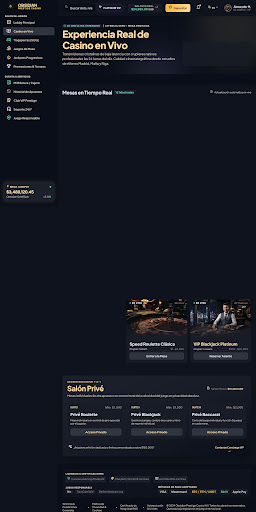

Obsidian Casino
Una experiencia de casino en vivo.
Interfaz de entretenimiento digital con mesas en directo, juegos de casino y una estética nocturna inspirada en el lujo y el oro.

Casino en Vivo
Explora las mesas en tiempo real, filtra por tipo de juego y descubre las salas VIP.
Abrir la vista